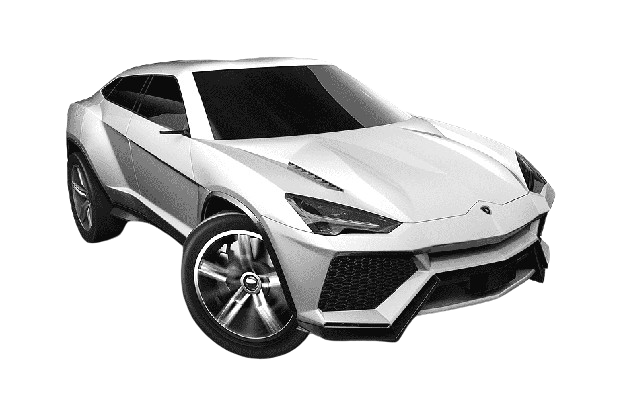
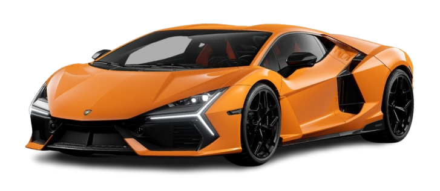
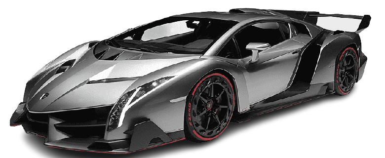
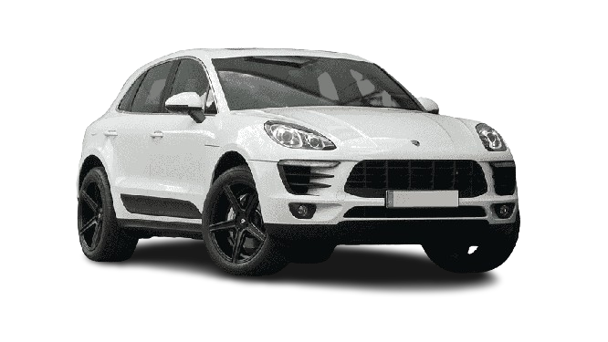
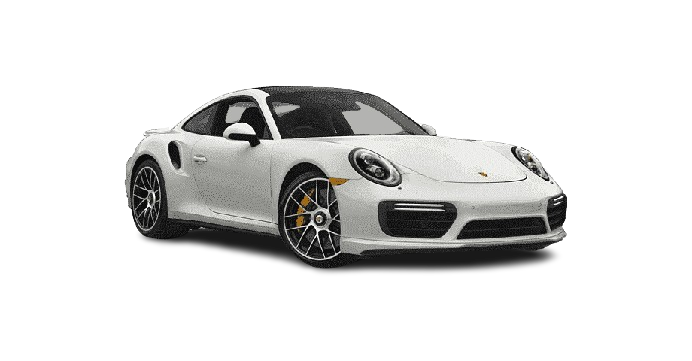
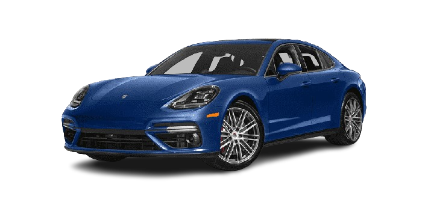

AUDI
A Audi AG é uma empresa do ramo automobilístico, reconhecida pelos carros de luxo fundada em 16 de junho de 1909 por August Horch. Desde os anos 1960, a empresa é controlada pelo Volkswagen, que completou a aquisição de todas as ações da fabricante apenas em 2020.
-
Audi e-tron gt

O Audi e-tron GT traça um arco para o futuro. Como um coupé de quatro portas com uma longa distância entre os eixos, apresenta as proporções de um clássico gran turismo, fundido em um design Audi progressista.
-
Audi R8

O R8 é um modelo superesportivo de dois lugares da Audi. É baseado no carro conceito Audi Le Mans Quattro, apresentado em 2003 no salão de Frankfurt.
-
Audi A3

Audi A3 é um hatchback médio de motor dianteiro transversal e tração dianteira ou integral. Ele vem sendo produzido desde 1996, na Alemanha, e tinha a missão de ser o modelo de entrada da marca Audi, reconhecida por seu padrão de qualidade e refinamento de luxo.
-
Mercedes-AMG One

Construído para se tornar uma lenda: o Mercedes-AMG ONE. O carro de corrida mais extraordinário, contemporâneo e legal para estradas que surgiu em Affalterbach. Inspirado na Fórmula 1, repleto de superlativos, feito para a estrada.
-
Mercedes Vision GT

Construído para se tornar uma lenda: o Mercedes-AMG ONE. O carro de corrida mais extraordinário, contemporâneo e legal para estradas que surgiu em Affalterbach. Inspirado na Fórmula 1, repleto de superlativos, feito para a estrada.
MERCEDES-BENZ
A Mercedes-Benz é uma marca alemã de automóveis pertencente a Mercedes-Benz Group criada em 1924, sendo resultado de uma fusão entre a Benz & Cie. e a Daimler-Motoren-Gesellschaft, é uma das mais antigas fabricantes de automóveis do mundoA Mercedes-Benz é uma marca alemã de automóveis pertencente a Mercedes-Benz Group criada em 1924, sendo resultado de uma fusão entre a Benz & Cie. e a Daimler-Motoren-Gesellschaft, é uma das mais antigas fabricantes de automóveis do mundo
-
Mercedes-AMG GT S

O Mercedes AMG GT S é alimentado por um motor oito cilindros na V sobrealimentado desenvolvendo um binário máximo de 650 Nm a 1750 rpm e uma potência máxima de 510 cv a 6250 rpm transmitida às rodas traseiras de 20 polegadas através de uma caixa automática de 7 velocidades.
-
Mercedes GT R pro

Construído para se tornar uma lenda: o Mercedes-AMG ONE. O carro de corrida mais extraordinário, contemporâneo e legal para estradas que surgiu em Affalterbach. Inspirado na Fórmula 1, repleto de superlativos, feito para a estrada.
LAMBORGHINI
Lamborghini é uma fabricante italiana de automóveis desportivos de luxo e de alto desempenho criada originalmente para competir com a Ferrari com sede no município de Sant'Agata Bolognese.
-
Huracán

O Huracán é um automóvel desportivo construído pela empresa italiana Lamborghini, substituindo o lendário Gallardo, uns dos carros mais bem sucedidos da história da companhia.
-
Urus
Modelo tem motor de 666 cv de potência e chega aos 100 km/h em apenas 3,3 segundos. O Lamborghini Urus é um fenômeno global. Em 2021, a fabricante italiana teve o melhor desempenho de sua história com 8.405 vendas e o SUV foi o líder disparado
-
Revuelto
O Revuelto entrega três telas: o cluster de 12,3 polegadas interativo, mídia central vertical de oito e a terceira tela de 9,1 que fornece informações para o carona. Quem está do lado participa com os olhos da condução. A Lamborghini chama isso de uma nova direção imersiva e compartilhada.
-
Veneno
Com 750 cavalos de potência, faz o veículo acelerar de 0 a 100 km/h em apenas 2,9 segundos e a velocidade máxima chega a 355 km/h. Acoplada está uma transmissão de sete velocidades com cinco modos de funcionamento, além de uma tração integral nas quatro rodas.
PORSCHE
A marca alemã Porsche foi fundada em 1931 por Ferdinand Porsche e o seu filho Ferry Porsche. Ferdinand Porsche já era conhecido antes de fundar a Porsche, ele havia trabalhado para outras marcas. Havia também lançado em 1900 o primeiro automóvel híbrido.
-
Macan
O motor V6 biturbo de 2,9 litros entrega 324 kW (440 CV) a uma velocidade máxima de 272 km/h. De 0 a 100 km/h em 4,3 s con Paquete Sport Chrono. Para combinar com esse desempenho, o sistema de escape esportivo de série cria um som volumoso do motor.
-
Porsche 911
O Porsche 911 é um carro desportivo produzido pela alemã Porsche AG de Stuttgart, Alemanha desde 1964. O modelo está em constante evolução desde seu lançamento em 1963 no Salão de Frankfurt, com o nome de 901.
-
Panamera
Os modelos Panamera é a combinação perfeitamente coordenada entre propulsão de alto desempenho, sistema de dupla embreagem Porsche PDK e chassi garantem um desempenho geral impressionante.
FERRARI
Ferrari é uma fabricante italiana de carros esportivos de luxo com sede em Maranello. Fundada por Enzo Ferrari em 1939 na divisão de corridas da Alfa Romeo com o nome Auto Avio Costruzioni, a empresa construiu seu primeiro carro em 1940.
-
Enzo Ferrari

Enzo é um supercarro de tração traseira e motor central-traseiro produzido pela Ferrari, fabricante italiana de automóveis. Recebeu o nome do criador da companhia, Enzo Anselmo Ferrari.
-
LaFerrari

A LaFerrari (também conhecida pelo seu nome do projeto, F150) é um carro superesportivo coupé, duas portas, dois lugares, de motor central traseiro e tração traseira, produzido pela Ferrari.
Ferrari 296 GT3

O Ferrari 296 (Tipo F171) é um carro esportivo construído desde 2022 pela empresa italiana Ferrari. O 296 é um carro de dois lugares, oferecido como um cupê GTB e um conversível com capota rígida dobrável GTS.